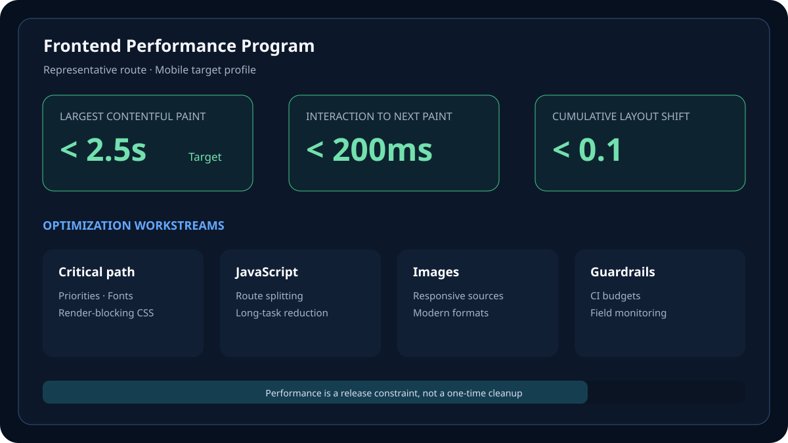

Technologies used
- Angular and TypeScript
- Chrome DevTools Performance panel
- Lighthouse and Lighthouse CI
- PageSpeed Insights and CrUX
- WebPageTest
- PerformanceObserver and real-user monitoring
Web performance case study
A measurement-led approach to reducing render delay, JavaScript cost and layout instability while turning performance into a repeatable engineering constraint.

This case study presents a practical workflow for improving a JavaScript-heavy product: establish a reliable baseline, connect user-facing metrics to specific loading phases, fix the highest-impact bottlenecks and add safeguards so performance does not erode after launch.
The approach combines lab diagnostics with real-user monitoring. Lighthouse and browser traces explain what happens during a controlled load; field data reveals how actual devices, networks and interactions behave over time.
Feature growth had increased bundle size, third-party work and above-the-fold competition. Large images delayed the primary content, route initialization performed more JavaScript than the first screen required, and components could shift as late content arrived.
One-time optimization was insufficient. The engineering system also needed ownership, budgets and release feedback that prevented new regressions.
The primary content was identified per route rather than assumed to be the hero image. Critical assets were discoverable in initial HTML, appropriately prioritized and delivered at their rendered dimensions. Non-critical images used responsive sources and lazy loading, while dimensions or aspect ratios reserved layout space.
Routes and heavy features were split at meaningful user boundaries. Optional widgets initialized after the main experience, third-party scripts loaded only with a clear purpose and large dependencies were challenged before micro-optimizing application code.
Long synchronous work was divided into smaller tasks. Expensive computations were memoized or moved away from the main thread, list rendering was constrained through pagination or virtualization, and event handlers updated only the state required for the next frame.
CI tracked bundle and Lighthouse budgets on representative pages. Field telemetry recorded LCP, INP and CLS with route and release context. Lab failures blocked clear regressions; field trends informed prioritization rather than being treated as instant pass-or-fail signals.
Challenge: A fast developer machine did not represent real visitors.
Solution: Controlled lab traces diagnosed causes, while segmented field data validated impact across device and connection classes.
Challenge: Analytics and embedded services competed with primary content.
Solution: Every third party received an owner, loading policy and measurable budget; non-essential code was delayed or removed.
Challenge: Performance improvements could disappear as new features shipped.
Solution: Route budgets, pull-request feedback and release dashboards converted optimization from a cleanup project into an engineering standard.
The improvement program used objective acceptance criteria:
No confidential client baseline or invented percentage improvement is published. Results for this portfolio itself are independently visible through its public URL and can be re-tested with PageSpeed Insights.